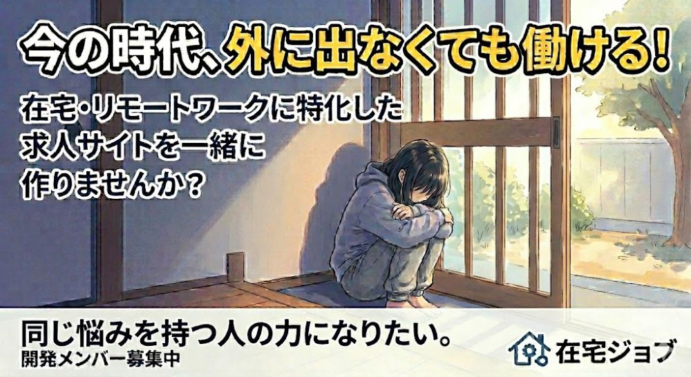

2004年4月生まれで、今年で22歳です。
16歳の頃不登校になり、高校は通信制の学校に通いました。
一般的な4年制大学に入学しましたが、去年ZEN大学に編入学しました。
このポートフォリオでは授業で制作した作品を紹介します。

この画像は人工知能活用実践という授業で、生成AIを使って作成しました。
やってみたいプロジェクトの仲間集め用の広告を作る課題で、
在宅でできるアルバイトや仕事だけを探せるWebサイトやアプリがあればいいのになぁ…
という気持ちをもとに作成しました。